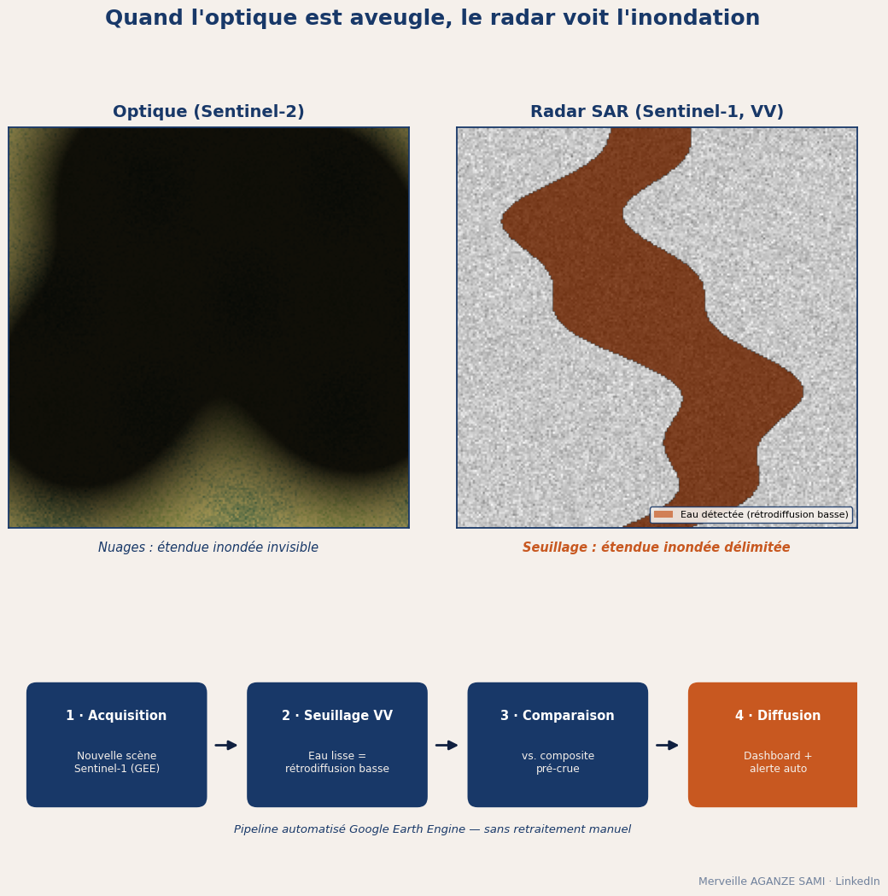

Il y a une ironie cruelle dans le suivi des inondations en Afrique centrale : la période où l'on a le plus besoin d'images satellites est précisément celle où l'on n'en obtient aucune. Pendant la saison des pluies, le bassin du Congo disparaît sous une couverture nuageuse quasi permanente. Les capteurs optiques — Sentinel-2, Landsat — ne voient rien. On attend une éclaircie, et pendant ce temps l'eau monte, se retire, et la crue est finie avant que la première image exploitable n'arrive.
Il existe pourtant une famille de capteurs pour laquelle les nuages n'existent tout simplement pas. Voici comment mettre en place un suivi des inondations qui fonctionne quand plus rien d'autre ne fonctionne — le principe physique, la chaîne de traitement, et surtout les pièges que l'on découvre généralement trop tard.

Pourquoi le radar voit ce que l'optique ne voit pas
Un capteur optique est passif : il enregistre la lumière du soleil réfléchie par la surface. Si un nuage s'interpose, il enregistre le nuage. C'est aussi simple, et aussi bloquant, que cela.
Un radar à synthèse d'ouverture (SAR) fonctionne à l'inverse : il est actif. Il émet lui-même une onde et mesure ce qui lui revient. Sentinel-1, le satellite radar du programme européen Copernicus, émet en bande C — une longueur d'onde d'environ 5,6 centimètres. Or les gouttelettes qui composent les nuages sont des centaines de fois plus petites que cela. À cette échelle, le nuage est tout simplement transparent : l'onde le traverse à l'aller, rebondit sur le sol, et le retraverse au retour.
Conséquence pratique : parce qu'il produit sa propre onde, le radar fonctionne aussi la nuit. Deux contraintes majeures de l'optique — la couverture nuageuse et l'éclairement solaire — disparaissent d'un coup.
Le principe de détection : l'eau est noire en radar
Ce qui rend la détection des inondations si élégante en radar, c'est que l'eau libre possède une signature quasi caricaturale. Une surface d'eau calme est lisse à l'échelle de l'onde : elle se comporte comme un miroir. L'onde émise repart dans la direction opposée au satellite au lieu d'être diffusée dans toutes les directions. Presque rien ne revient au capteur.
Résultat : sur une image radar, l'eau apparaît en noir profond, tandis que la végétation, les sols rugueux et le bâti renvoient beaucoup plus de signal et ressortent en gris clair. Le contraste est si marqué qu'un simple seuillage du coefficient de rétrodiffusion suffit souvent à séparer l'eau du reste.
Un mot sur la polarisation, car c'est un choix qui compte. Sentinel-1 acquiert généralement en double polarisation VV et VH. Pour l'eau libre, la polarisation VV donne en général le meilleur contraste et reste le choix par défaut. La VH, plus sensible à la structure du couvert, devient utile lorsqu'on cherche à détecter de l'eau sous la végétation — un cas nettement plus difficile.
Monter une chaîne automatisée en cinq étapes
L'intérêt opérationnel n'est pas de produire une belle carte une fois, mais d'obtenir une carte à jour à chaque revisite du satellite, sans intervention manuelle. Sur Google Earth Engine, où l'archive Sentinel-1 est déjà prétraitée et où le calcul se fait côté serveur, la chaîne tient en cinq étapes.
- 1Construire une référence pré-crue. Un composite médian des images de saison sèche donne l'état « normal » du territoire : les cours d'eau permanents, les plans d'eau habituels. Sans cette référence, impossible de distinguer une rivière d'une inondation.
- 2Filtrer le chatoiement. Toute image radar présente un grain granuleux caractéristique, le speckle, inhérent à l'imagerie cohérente. Un filtre spatial (Lee affiné, par exemple) ou une moyenne multi-temporelle le réduit fortement — étape indispensable avant tout seuillage.
- 3Seuiller pour extraire l'eau. Un seuil fixe sur la rétrodiffusion VV fonctionne, mais se dérègle d'une scène à l'autre. La méthode d'Otsu, qui détermine automatiquement le seuil optimal à partir de l'histogramme bimodal de l'image, donne des résultats bien plus stables dans le temps.
- 4Soustraire l'eau permanente. La différence entre l'eau détectée et la référence pré-crue isole l'eau nouvelle — c'est-à-dire l'inondation proprement dite, la seule information qui intéresse un dispositif d'alerte.
- 5Croiser et diffuser. L'étendue inondée est recoupée avec les couches qui donnent du sens : localités, infrastructures, parcelles, zones d'intervention du projet. La sortie alimente un tableau de bord, et le franchissement d'un seuil de superficie déclenche une alerte.
Sentinel-1 repasse au-dessus d'une même zone tous les six à douze jours selon la latitude et la configuration de la constellation. Ce n'est pas du temps réel — mais comparé à une attente d'éclaircie qui peut durer des semaines, c'est un changement d'ordre de grandeur. Et les données sont gratuites et ouvertes.
Les pièges que l'on découvre trop tard
C'est la partie qu'on lit rarement dans les tutoriels, et c'est pourtant celle qui décide de la fiabilité opérationnelle d'un dispositif. Le radar voit à travers les nuages, mais il n'est pas infaillible.
- Le vent rugosifie l'eau. Une surface d'eau agitée cesse d'être un miroir : elle renvoie du signal et n'apparaît plus assez sombre. Résultat, une inondation sous-estimée les jours de vent. C'est la principale cause de faux négatifs.
- Certaines surfaces sèches imitent l'eau. Le sable lisse, l'asphalte, les sols nus très plats renvoient eux aussi très peu de signal. Sans filtre complémentaire, ils sont classés comme inondés.
- L'eau sous végétation ou en ville échappe au seuillage. Sous un couvert forestier ou entre des bâtiments, l'onde rebondit plusieurs fois (effet de double rebond) et revient plus forte, pas plus faible. L'inondation y apparaît claire — l'inverse de ce qu'on cherche. Ces contextes demandent des approches spécifiques.
- Le relief crée des zones aveugles. En terrain accidenté, les ombres radar et les repliements produisent des artefacts que l'on confond facilement avec de l'eau.
La parade la plus efficace tient en une phrase : filtrer par la topographie. Un modèle numérique de terrain, ou mieux un indice de hauteur au-dessus du drainage le plus proche (HAND), permet d'éliminer d'emblée toute « eau » détectée sur un versant à forte pente ou nettement au-dessus du réseau hydrographique. L'eau ne monte pas les collines : ce simple bon sens, traduit en règle spatiale, supprime l'essentiel des faux positifs.
Ce que cela change concrètement
Pour une équipe projet, le bénéfice n'est pas technique, il est décisionnel. Disposer d'une carte d'étendue inondée quelques jours après l'événement, plutôt que quelques semaines, change la nature des questions auxquelles on peut répondre : quelles localités sont touchées, quelles routes sont coupées, quelles parcelles d'un programme agricole sont sous eau, où envoyer une mission de vérification en priorité.
Cela change aussi la relation aux bailleurs et aux partenaires. Une estimation de surface inondée, datée, reproductible et documentée, vaut mieux qu'un rapport qualitatif rédigé de mémoire trois mois plus tard. Et parce que la chaîne est automatisée, la même méthode s'applique à la crue suivante sans refaire le travail.
À retenir
- Le radar en bande C traverse les nuages et fonctionne de nuit : les deux limites de l'optique disparaissent
- L'eau libre apparaît très sombre en polarisation VV — un seuillage suffit souvent à l'extraire
- Une référence pré-crue est indispensable pour isoler l'eau nouvelle de l'eau permanente
- Vent, sols lisses, végétation et relief sont les quatre sources d'erreur à traiter explicitement
- Un filtre topographique (MNT ou HAND) élimine la majorité des faux positifs
Par où commencer
Les données Sentinel-1 sont accessibles gratuitement via le Copernicus Data Space, et déjà prétraitées dans le catalogue de Google Earth Engine — ce qui évite l'étape la plus rebutante de la chaîne radar. Le plus efficace pour se lancer : choisir une crue passée et bien documentée sur son territoire, reconstituer la carte d'étendue inondée, puis confronter le résultat aux rapports de terrain disponibles. C'est en mesurant ses propres écarts que l'on apprend à calibrer la méthode — et que l'on gagne le droit de s'en servir en situation réelle.
La donnée la plus utile n'est jamais la plus belle image. C'est celle qui arrive quand plus rien d'autre n'est visible.

Merveille Aganze Sami
Conseillère MEL & Gestion de Bases de Données. Plus de 9 ans d'expérience en suivi-évaluation, SIG et digitalisation auprès d'organisations internationales (GIZ, Enabel) en RD Congo.
Un suivi environnemental à fiabiliser par satellite ?
Parlons-en